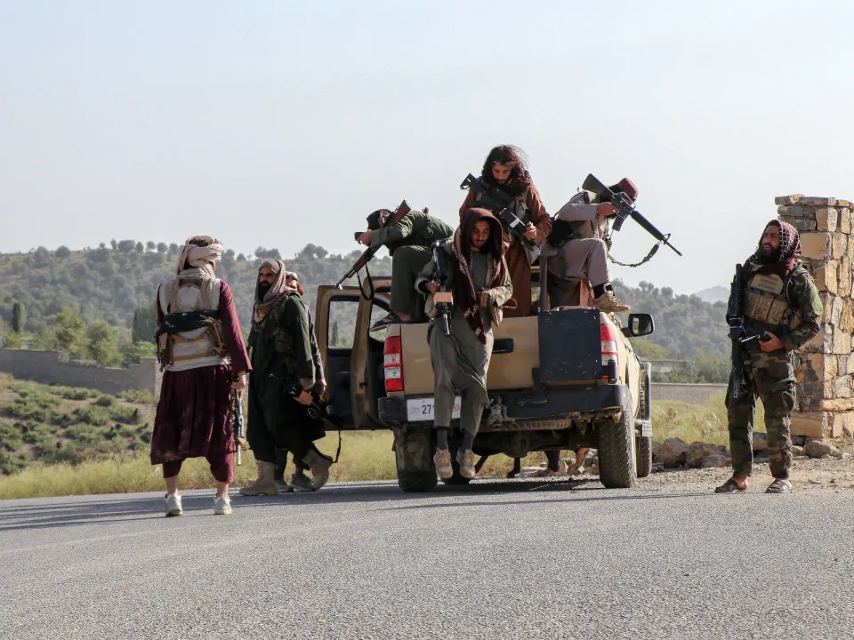

世界苦茶10月13日新闻 | 26条 | 哈马斯归还全部以色列人质

哈马斯归还全部以色列人质 | 阿富汗与巴基斯坦发生冲突 | 国民党称中国网军介入其选举 | 习近平确认参与韩国APEC峰会
苦茶数据
美元兑人民币：7.13（昨日7.14，前日7.14）
美元兑日元：152.46（昨日152.75，前日153.10）
上证指数：3889（昨日3897，前日3913）
标普500指数：6633（昨日6552，前日6735）
比特币：114409（昨日112279，前日112414）
布伦特原油：63.66（昨日62.73，前日65.04）
中国新闻
• 中国国家烟草局副局长韩占武落马。
中国国家烟草专卖局副局长韩占武在任上被查，成为烟草行业今年来第二个落马的“老虎”。中共中央纪委监委网站星期天披露，韩占武涉嫌严重违纪违法，目前正接受中纪委国家监委纪律审查和监察调查。这也使得今年来落马的中管干部增至46人。中国国家烟草专卖局是国务院直属事业单位，韩占武是该局排名第一的副局长。据财新网报道，9月10日至11日，韩占武在江苏烟草调研；这是他官宣落马前，最后一次公开露面。公开资料显示，今年59岁的韩占武曾长期在工业和信息化部任职，先后担任工信部人事教育司副司长、中国机电设备招标中心主任、工信部人事教育司司长、工信部办公厅主任等职。2020年4月，韩占武出任国家烟草专卖局副局长。
• 娃哈哈创始人弟弟与侄女各推新品牌对打。
中国饮料巨企娃哈哈集团创始人宗庆后的弟弟宗泽后据报推出新品牌“娃小智”，与侄女宗馥莉的“娃小宗”打对台。综合蓝鲸新闻和澎湃新闻报道，娃小智上星期五在浙江杭州举办全国招商会。招商海报显示，购买娃小智产品10万元以上，即可获得区域独家经销商资格。蓝鲸新闻引述招商人员说法称，他们从“十一”国庆节前后开始做娃小智，“这边属于宗氏家族，就是宗泽后这边，相当于我们要和宗馥莉一起竞争市场。” 招商信息还显示，娃小智产品线包含AD钙奶、矿泉水、椰子水、八宝粥、茶类饮料等。招商人员称，产品配方和娃哈哈一模一样，“但价格比娃哈哈低”。这名招商人员透露，娃小智已经和153家客户签约。企业信息平台“天眼查”显示。
• 中国警告宣传人员和涉密单位不得泄露国家机密。
中国警告宣传部门与涉密单位停止向媒体泄露国家机密 与国家保密局相关的社交账号“保密官”周五在一篇文章中敦促有关部门加强对新闻采访的保密审查，以防止媒体泄露国家机密。文章指出，多起由新闻媒体造成的国家机密外泄事件，促使保密当局对宣传部门和涉密单位提出警示。文章提醒，各部门的网站和社交媒体平台是重要的宣传阵地，“这些公开信息常常成为外部势力关注的焦点”。新闻宣传管理松懈以及缺乏保密审查，容易导致信息泄露。文中还批评部分宣传和新闻人员“盲目追求新奇”，在追求宣传效果时忽视保密审查，从而危及国家安全和利益。在中国，几乎所有国有机构都设有负责宣传的部门。
• 上海将取消制造业所有外资准入限制。
上海将取消对制造业设施的所有外资限制 市长龚正周日表示，已深化改革，赋予电动汽车、增值电信服务、生物技术和医院等领域的海外公司全面进入中国市场的权利。“我们正有序推进进一步实施制度性开放改革，”他在年度国际工商领袖咨询委员会会议后的新闻发布会上说。
• 南海紧张局势再度升温，中菲船只相撞。
中菲海岸警卫队在南海再起碰撞事件后互相指责。中国称菲律宾船只“非法闯入”靠近有争议的桑迪暗滩海域，菲律宾则谴责中国的行为为“明显威胁”和霸凌手段。双方对事件各执一词，互相指控不当行为和挑衅。中国海警发言人刘德军在一份声明中称，尽管对方“屡次严正警告”，一艘菲律宾船只仍“危险接近”中国船只，导致发生碰撞，“碰撞事件由菲方全权负责”。刘德军称，中方依法采取了管控措施，坚决驱离相关船只，并将此次行动形容为“专业、规范、合理、合法”。桑迪暗滩为低潮时露出的地物，附近的中业岛/帕加萨岛同属中沙群岛，双方均声称拥有该地区主权。
**• 韩国外长赵显10月13日在国会确认，习近平将访韩出席APEC峰会。政府早前透露，李在明将在庆州以“准国事访问”礼遇接待，彭丽媛将参访佛国寺、宇洋美术馆。赵显10月7日与王毅通话，表示韩方将“竭尽所能”发展对华关系。 **
印太新闻
• 阿富汗袭击巴基斯坦边境哨所。
阿富汗称在一夜边境行动中击毙58名巴基斯坦士兵 喀布尔 — 阿富汗周日表示，在一夜之间的边境行动中击毙了58名巴基斯坦士兵，称此举是对巴方屡次侵犯其领土和领空的回应。巴基斯坦军方给出的伤亡数字远低于此，称有23名士兵死亡。本周早些时候，阿富汗当局指责巴基斯坦轰炸首都喀布尔及该国东部的一处市场。巴基斯坦未对该袭击声称负责。塔利班政府发言人扎比胡拉·穆贾希德表示，阿方部队已占领25个巴基斯坦军方哨所，另有30名巴基斯坦士兵受伤。“阿富汗所有官方边界和事实控制线的局势完全受控，非法活动在很大程度上已被遏制，”穆贾希德在喀布尔的新闻发布会上说。巴方此前曾袭击阿富汗境内地点，称目标是武装分子的藏匿处。
• 中国网军介入国民党主席选举。
台湾在野的国民党主席选举倒数五天，台北前市长郝龙斌阵营及中广前董事长赵少康，上周指控中国大陆网军介入选举，在网络散播假消息并要求台湾国安单位调查。现任国民党主席朱立伦星期天表示，希望六位候选人要更团结。综合《联合报》和《中国时报》的报道，中广前董事长赵少康上星期五说，大量疑似来自中国大陆的YouTube频道，发布攻击候选人之一的台北市前市长郝龙斌和他本人的消息。赵少康说，党主席选举是国民党家务事，却引起大陆方面排山倒海的介入，希望大陆官方制止；如果大陆官方纵容就是介入，这已是国安问题，台湾国安单位应调查。郝龙斌同日也称，人工智能造假讯息介入这次选举非常明显，有四个频道，80部短影音到处流传。(翻评：每次台湾公民社会说有中国网军介选，这些人就说是炒作两岸议题，直到……)
• 赖清德承诺「帮助美国再次伟大」在台湾引发争论。
广告 赖清德承诺“帮助让美国再次伟大”在台湾引发争议 领导人呼吁在晶片和人工智能方面加强合作，但批评者称这可能掏空岛内产业基础并削弱筹码 阅读时间：4分钟 为何你可以信任南华早报 28 劳伦斯·钟 报道 台北 — 台湾领导人赖清德表示支持华盛顿的再工业化倡议并“帮助让美国再次伟大”，此言论再次引发围绕台北应在多大程度上与美国目标对齐的辩论。广告 立法者、学者和商界领袖警告说，过度依赖华府可能会掏空台湾的产业基础并削弱其地缘政治筹码，凸显赖政府在变动的国际秩序中所面临的微妙平衡。赖在接受美国保守派评论员巴克·塞克斯顿的广播采访时表示，支持与华盛顿在全球半导体和人工智能供应链上加强合作。
科技新闻
• 高通承认收购案已完成 未通知中方。
2025年10月12日中国上周五宣布对高通进行反垄断调查后，有媒体报道称高通承认完成一桩相关的收购案时，没有通知中方。广告 据路透社报道，中国国家市场监督管理总局周日表示，美国半导体制造商高通公司承认，今年6月完成对以色列Autotalks公司的收购时，没有告知中国有关部门。高通公司周日没有立即回应路透社的置评请求。此前两天，中国对高通启动了反垄断调查，调查该公司是否未申报收购以色列芯片设计公司，从而违反了中国反垄断法。上周五的该消息一出，高通股价在盘前交易中一度下跌近4%。2024年高通公司曾表示，由于未能及时获得监管部门的批准。
经济新闻
**• 2025年诺贝尔经济学奖授予乔尔·莫基尔，以表彰其明确通过技术进步实现持续增长的先决条件；授予菲利普·阿吉翁和彼得·豪伊特，以表彰其通过创造性破坏实现持续增长的理论。 **
• 中国汽车经销商在价格战与电商竞争者的夹击下倍感压力。
中国汽车经销商感受到来自价格战和电商竞争的生死挤压，行业联合体呼吁支持，同时一位分析师称扭转“难以实现”。根据中国乘用车市场信息联席会的数据，行业14家主要参与者在2025年上半年报告销量下滑10%，继2024年同比下降18%之后。由政府支持的行业联合体秘书长崔东树表示，大多数经销商因巨额亏损无法实现正向现金流。“建议相关主管部门督促银行对汽车流通领域企业提供金融支持，”他说。“金融服务公司可以通过与经销商合作，在稳定汽车市场方面发挥作用。”乘联会的调查结果呼应了中国汽车流通协会去年年底的悲观预测。该北京协会在一份报告中表示，许多会员将在两年内从创利企业沦为经营失败。
• 中国商务部改用国产软件发布公告文件。
中国商务部将公告文件格式从美国软件公司微软和Adobe文档，改为中国国产WPS文档。相关改动冲上微博热搜，有网民解读为中美开始“软件脱钩”。中国商务部上星期四发布对境外相关稀土物项以及对稀土相关技术实施出口管制的61号、62号公告，公告附件均为WPS文档。WPS Office是中国互联网企业金山软件自主研发的办公软件。商务部此前的公告附件，通常采用微软的word文档或Adobe的pdf文档。由于微软和Adobe均为美国公司，网民认为，这表明中国从中央文件开始“软件脱钩”。有网民赞许商务部“使用国产软件，使用中国标准”，但也有观点称，WPS曾被曝光监控文件内容并删除含敏感内容的本地文件。
• 据报9月18日被带走调查 深圳地铁、万科董事长辛杰失联。
深圳地铁集团党委书记兼董事长、地产巨头万科集团董事长辛杰，据报9月18日在会议中被带走调查后，已失联近一个月。中国自媒体账号“土楼研究所”星期六晚发布消息，称辛杰是在深圳参会时被带走，至今仍失联。不过，万科官网目前显示，辛杰职务信息仍被保留。目前深铁、万科当事方均未回应。由于消息披露时A股、港股均已收盘，万科股价暂未出现明显异动。今年59岁的辛杰长期深耕深圳国资系统。他从深圳外贸集团起步，先后执掌深圳长城投资、天健集团等国企，2017年起担任深铁集团董事长，同年深铁在股权大战争中击败宝能系，成为万科第一大股东。2020年，辛杰首次进入万科董事会，兼任投资与决策委员会委员。
• 美国贸易特使称，在美方试图就出口管制进行讨论时，中国“推迟”。
美国贸易特使詹姆森·格里尔称中国新的稀土限制是“权力攫取” 格里尔称北京拒绝就出口管制进行沟通，特朗普试图通过社交媒体淡化担忧 美中关系前景周日似乎再遇阻碍，美国贸易代表詹姆森·格里尔表示，中国在他方试图沟通时予以拒绝，而此时美国总统唐纳德·特朗普似乎在淡化持续的贸易分歧。曾在特朗普第一任期内任职于美国贸易机构的格里尔表示，北京收紧对战略性稀土矿和磁体的管控并未事先通报，令人吃惊，是一次“权力攫取”。“我可以告诉你，我们并未收到通知，一旦我们从公开渠道得知此事，便迅速联系中方希望通话，”格里尔在福克斯电视台《周日简报》节目中说。
• 中国警告美国：若特朗普不撤回征收100%关税的威胁，将采取反制措施。
北京誓言若美国总统唐纳德·特朗普兑现对中国进口商品征收100%新关税的威胁，将予以反制。特朗普的最新威胁是在中国上周对稀土矿物实施一系列出口限制之后发出的。紧张局势升级，可能破坏数月来的贸易谈判进展。商务部一名发言人周日在北京就此威胁首次发表评论称，“以高关税威胁不是同中国交往的正确方式”。发言人补充说：“如果美方坚持单方面行事，中国将坚决采取相应措施，维护自身合法权益。我们对关税战的立场是一贯的——我们不希望发生，但也不惧怕发生。
• 在政府停摆持续之际，特朗普大幅削减心理健康机构经费。
据美国国家公共广播电台获悉，特朗普政府已解雇了全国主要精神卫生机构的100多名员工。药物滥用与精神健康服务管理局的现任和前任员工告诉NPR，这些裁员是政府范围内减员行动的一部分。这些不被授权公开谈论该机构的人士表示，随着美国政府停摆持续，裁员发生在周五晚些时候。根据一位不被授权公开讨论裁员的机构内部人士，员工在周五美东时间晚上8点前不久收到了“裁员通知”。该消息人士称，政府官员没有说明裁员的理由：“我觉得今天大家普遍的感觉是震惊——不明白为什么会这样。”该消息人士知道有数十人被解雇。两名前员工告诉NPR，SAMHSA失去工作的员工总数约为125人。
俄乌战争
• 泽连斯基表示，在中东达成协议后，他看到了与俄罗斯实现和平的重新希望。
泽连斯基称中东协议为和平带来新希望，并期待对俄局势出现类似转机 乌克兰总统弗拉基米尔·泽连斯基周日在一段采访中表示，唐纳德·特朗普促成以色列与哈马斯达成停火协议的成功，重新点燃了他希望特朗普能够促成类似协议，从而缓解俄罗斯对乌克兰的战争的信心。在接受福克斯新闻“The Sunday Briefing”节目采访时，泽连斯基称中东的和平方案是“真正的成功”，并表示他周日曾与特朗普通话，表达了希望在总统的外交斡旋下，他国与普京的冲突也能朝类似方向发展。
• 泽连斯基表示，在加沙停火协议达成后，特朗普可以“向普京施压，迫使其停止战争”。
泽连斯基表示，在加沙停火协议达成后，特朗普可以“施压普京停止战争” 乌克兰总统弗拉基米尔·泽连斯基表示，他看到希望：美国总统唐纳德·特朗普能运用在促成以色列与哈马斯停火中使用的同样施压手段，推动俄罗斯在乌克兰实现和平。泽连斯基在10月12日对福克斯新闻表示：“我祝贺他，因为我认为这是美国的重大成功，也是特朗普总统亲自参与的重大成功。它向我们发出信号并带来希望：通过特朗普在中东为实现和平所使用的那种压力，我希望他能用同样的工具，甚至更强烈地施压普京，迫使他停止在乌克兰的战争。
• 泽连斯基与特朗普两天内第二次通话。
泽连斯基称与特朗普两天内第二次通话，讨论乌克兰防空与远程能力 乌克兰总统弗拉基米尔·泽连斯基10月12日表示，他与美国总统唐纳德·特朗普进行了两天内第二次通话。泽连斯基将此次通话形容为“非常富有成效”。据他称，两位领导人讨论了防空支援和远程打击能力，因俄罗斯加大了对乌克兰能源基础设施的攻击力度。“特朗普总统对正在发生的一切了如指掌，”泽连斯基说。泽连斯基与特朗普的前一次通话发生在10月11日。两人讨论了俄罗斯对乌克兰电网的袭击、加强乌克兰防空的协议以及美国在中东的和平努力。泽连斯基表示，第二次通话集中讨论了前一次通话中已计划的具体问题，双方“梳理了局势的各个方面”。白宫尚未对该通话置评。
• 民调显示，超过75%的美国人支持对俄罗斯实施额外制裁。
尽管美国总统唐纳德·特朗普不愿对莫斯科施加额外的经济压力，但哈佛/哈里斯X民调发现，大约77%的美国人支持对俄罗斯实施额外制裁以迫使其结束战争行动。该民调在10月1日至2日对2，413名美国已登记选民进行调查，显示对莫斯科实施额外制裁在两党之间获得压倒性支持。支持额外制裁的共和党选民比民主党选民更多，86%的共和党人支持新措施，而71%的民主党选民也同意美国应实施这些措施。只有23%的受访者完全反对新的制裁。结果凸显了美国公众普遍看法与特朗普政府政策之间的差异。尽管特朗普曾数次威胁对俄罗斯实施新制裁，但他很少兑现这些威胁，并一贯回绝国内外要求对莫斯科采取强硬措施的呼声。
世界新闻
• 以色列人质从加沙获释与中东和平峰会。
在2023年10月7日哈马斯对以色列发动毁灭性袭击两年多后，美国总统唐纳德·特朗普和欧洲领导人定于周一在埃及汇集，监督加沙停火的结束。今日事态：— 根据周五在加沙生效的停火协议条款，哈马斯预计将释放20名在押人质，为和平协议铺平道路。— 特朗普将停留以色列，会见以色列被劫持者的家属并在以色列克内塞特发表讲话。— 特朗普与埃及总统阿卜杜勒·法塔赫·塞西将在红海度假胜地沙姆沙伊赫主持一场和平峰会，并将在会上签署结束战争的协议，尽管预计以色列和哈马斯都不会出席。— 包括法国的埃马纽埃尔·马克龙、英国的基尔·斯塔默、德国的弗里德里希·梅尔茨、意大利的乔治娅·梅洛尼和西班牙的佩德罗·桑切斯，以及土耳其总统都会出席。
• 加沙市哈马斯武装与持枪氏族成员爆发冲突。
加沙城哈马斯部队与武装氏族成员爆发冲突 加沙城发生哈马斯安全部队与杜格穆什家族武装成员之间的激烈冲突，至少造成27人死亡，这是自加沙地带主要以色列行动结束以来最严重的内部冲突之一。目击者称，蒙面哈马斯枪手在城内约旦医院附近与氏族武装交火。哈马斯控制的内政部一名高级官员称，安全部门已将其包围并展开激烈战斗以将其拘捕。内政部称，其8名成员在“一支民兵的武装袭击”中丧生。医疗消息称，自周六冲突爆发以来，杜格穆什氏族19人和哈马斯武装8人死亡。目击者表示，冲突在加沙城南部的泰尔·哈瓦社区爆发。
• 范斯表示，政府将继续努力争取派遣国民警卫队前往芝加哥。
在上诉法院再次阻止政府在芝加哥地区部署国民警卫队之后，副总统JD·万斯表示，特朗普政府将“尽最大努力进行诉讼”。万斯的言论发表在联邦上诉法院在伊利诺伊州裁定特朗普政府可以将联邦化的国民警卫队成员留在伊利诺伊州但暂时不能部署的次日。“显然我们会尽可能进行诉讼，”万斯在ABC节目《本周》周日档中表示。“我们认为我们有权在全美范围内，尤其是在芝加哥，为公民提供适当的安全保障。”美国第七巡回上诉法院周六的裁决，是政府持续推动在包括芝加哥和俄勒冈州波特兰在内的多座民主党执政城市和州部署国民警卫队的最新进展。特朗普及其他政府官员声称联邦部队对于控制犯罪和保护联邦特工是必要的。
• 特朗普启程前往中东，庆祝停火协议并敦促阿拉伯领导人把握时机。
在空军一号上——美国总统唐纳德·特朗普周日启程前往以色列和埃及，庆祝美国斡旋促成的以色列与哈马斯停火和人质交换协议，并敦促中东盟友把握机会，在这一动荡地区构建持久和平。这一时刻十分脆弱，因以色列和哈马斯仅处于落实特朗普协议第一阶段的早期阶段，该协议旨在为2023年10月7日由哈马斯领导的武装分子对以色列发动的袭击所引发的战争带来永久性结束。特朗普认为，现有一个有限窗口可用于重塑中东并重置以色列与其阿拉伯邻国之间长期紧张的关系。“战争结束了，好吗？”在预计从加沙释放人质前，特朗普在前往该地区的随行记者面前表示。“我认为人们已经厌倦了，”他强调，并表示他相信停火会维持。
• 特朗普与塞西将于周一共同主持和平峰会，旨在结束加沙战争。
美国总统唐纳德·特朗普与埃及总统阿卜杜·法塔赫·塞西将共同主持周一下午在埃及沙姆沙伊赫举行的和平峰会。包括法国总统埃马纽埃尔·马克龙、英国首相凯尔·斯塔默、德国总理弗里德里希·默茨、意大利总理乔治亚·梅洛尼、西班牙首相佩德罗·桑切斯以及土耳其总统雷杰普·塔伊普·埃尔多安在内的欧洲和土耳其领导人将出席此次峰会。